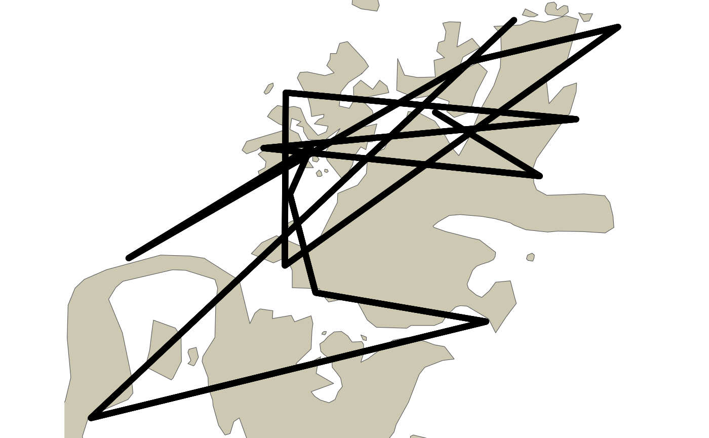
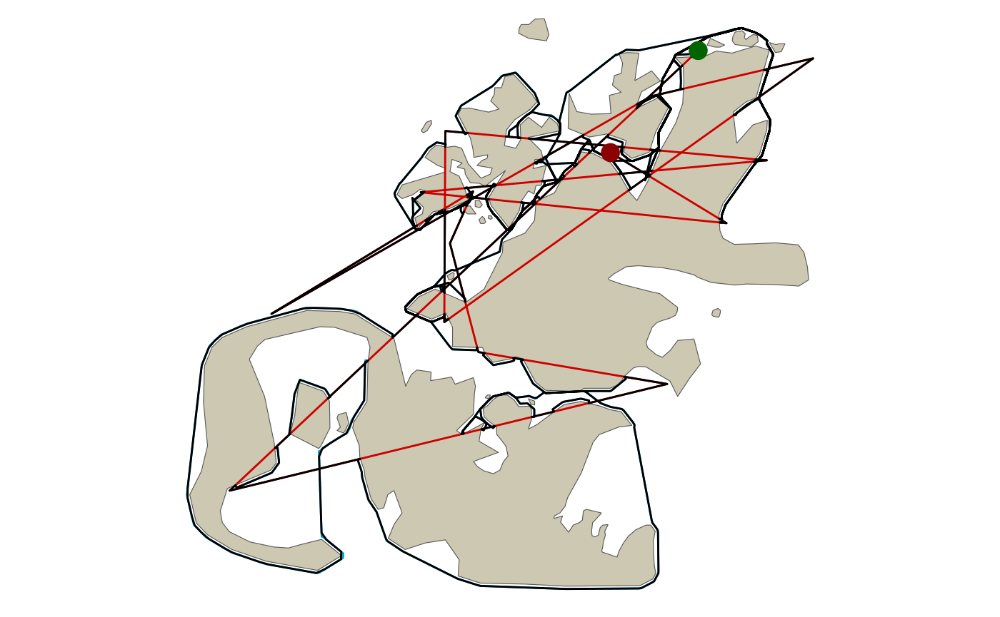

Re-routing Straight Line Paths Around Barriers - A Visibility Graph Demo
reroute_demo.RmdThis vignette demonstrates the basic concept within the {pathroutr} package for re-routing paths that cross a barrier around said barrier using the shortest path (weighted by distance) through a visibility graph.
The larger intent is to use this approach for adjusting the movement tracks of marine animals through water when estimated paths from movement models or other estimation approaches incorrectly cross land.
The Test Environment
First, let’s setup our test space with our included land barrier and points of interest. This was based off of the north Kodiak Island region in Alaska, USA (but, is not an exact replica. So, not for navigational use!!).
ggplot() +
ggspatial::annotation_spatial(data = land_barrier,
fill = "cornsilk3", size = 0) +
ggspatial::layer_spatial(data = poi) +
theme_void()The complexity of the nearshore environment with small islands and narrow passages is a difficult situation for estimating marine animal tracks from telemetry devices that often have error associated with the location estimates.
Here, we sample 15 of our points of interest and, then, connect them as a line representing a path across our complicated landscape.
l_pts <- poi %>% slice_sample(n = 15)
path <- l_pts %>% summarise(do_union = FALSE) %>% st_cast('LINESTRING')
ggplot() +
ggspatial::annotation_spatial(land_barrier, fill = "cornsilk3", size = 0) +
ggspatial::layer_spatial(poi) +
ggspatial::layer_spatial(path, color = "deepskyblue3") +
ggspatial::layer_spatial(l_pts[1,], color = "darkgreen", size = 4) +
ggspatial::layer_spatial(l_pts[15,], color = "darkred", size = 4) +
theme_void()
Now, let’s sample 10000 points along this string and this will represent our simulated path of track observations.
track_pts <- st_sample(path, size = 10000, type = "regular")
ggplot() +
ggspatial::annotation_spatial(land_barrier, fill = "cornsilk3", size = 0) +
ggspatial::layer_spatial(path, color = "deepskyblue3") +
ggspatial::layer_spatial(track_pts) +
theme_void()
Re-route the path
The first function we’ll use from the {pathroutr} package is get_barrier_segments() which identifies all of the consecutive track points that intersect with the land barrier. The result of this function is a tibble that stores the key metadata about each of the segments identified to cross land. The start_idx and end_idx columns store the row index of the two points that bookend each stretch of consecutive points that intersect with the barrier polygon. These points DO NOT intersect with the barrier. The n_pts column is the number of consecutive points that intersect with the barrier. Lastly, the start_pt and end_pt columns store the Simple Feature geometry for the bookend points represented by start_idx and end_idx. Later, these geometries will be used to identify the nearest node in our network for shortest path routing and the final, updated path will start and end with these geometries.
segs_tbl <- get_barrier_segments(track_pts,land_barrier)
segs_tbl
#> # A tibble: 25 × 6
#> sid start_idx end_idx n_pts start_pt
#> <int> <dbl> <dbl> <dbl> <POINT [m]>
#> 1 1 318 361 42 (81645.06 941323.7)
#> 2 2 456 482 25 (81914.6 939157.4)
#> 3 3 580 692 111 (82777.57 939060.8)
#> 4 4 855 1315 459 (85809.93 942180)
#> 5 5 1419 1613 193 (92029.04 948577.2)
#> 6 6 1699 1850 150 (94417.51 950286.7)
#> 7 7 1936 1963 26 (93974.79 946563.8)
#> 8 8 2101 2753 651 (91843.01 946326.5)
#> 9 9 2913 3032 118 (79237.15 947517.3)
#> 10 10 3152 3207 54 (76096.11 945413)
#> # … with 15 more rows, and 1 more variable: end_pt <POINT [m]>Our next step is to create a visibility graph. This is, essentially, a road network for our marine environment. In simple terms, we connect all of the vertices for our barrier polygon with a Delaunay triangle mesh and, then, remove any of the edges that cross land. Our prt_visgraph() function returns an undirected graph of type sfnetwork created with the sfnetworks package. Edge lengths are stored as a weight attribute for our visibility graph.
The most computationally intensive step is likely to be identification of which edges intersect with the barrier polygon. We try to minimize this by, first, buffering the barrier by -1 meter and then calling sf::st_intersect(). Because all of the nodes in our network are also vertices in our barrier polygon, all edges intersect with the barrier polygon. By buffering by -1 meter, we disconnect the nodes. If we didn’t do this, we would need to evaluate two spatial predicate functions (sf::st_crosses() and sf::st_within()). With the negative buffer adjustment, we can rely solely on sf::st_intersect(). The other step we do to minimize compute time is to NOT evaluate which edges intersect with the barrier polygon feature. Instead we evaluate which polygon features intersect with which edges. Because sf::st_intersect() evaluates row wise, this minimizes the number of evaluations since the number of polygon features in barrier is always going to be much much smaller than the number of edges.
vis_graph <- prt_visgraph(land_barrier, buffer = 150)In previous development versions of {pathroutr} we relied on the {stplanr} package. Now, we rely on {sfnetworks} and one advantage of this approach is that we can use the sfnetworks::st_network_blend() function to integrate our segment start and end points into the network. Previously, the nearest existing network node to the start/end points was used as the start and end of the shortest path calculation. A straight line was, then, drawn between the start/end points to the start and end of the path to complete the re-routed track segment. The sfnetworks::st_network_blend() function provides a more robust solution by creating new network nodes on an existing edge at the closest point from the provided segment start and end points. These new network nodes serve as start and end points for the shortest path. And, as before, we extend the path to include the segment start and end points.
Additionally, we now also conduct an integrity check of the newly created LINESTRING to ensure the directionality is consistent (e.g. the first node in the LINESTRING is the segment start point). This should resolve any previous issues that created spurious line segments that diverged from the determined shortest path.
segs_tbl <- segs_tbl %>% prt_shortpath(vis_graph, blend = TRUE)
ggplot() +
ggspatial::annotation_spatial(land_barrier, fill = "cornsilk3", size = 0) +
ggspatial::layer_spatial(segs_tbl$geometry, color = "deepskyblue3") +
theme_void()
This process of
are likely to be the same across most workflows. So, the prt_reroute() function exists to simplify the process for the user. In short, this function calls the two functions above along with some error handling and data checking. In the example code below prt_reroute() is followed up with a call to prt_update_points(). For even more efficient coding, the %>% function could be used to pipe the result from prt_reroute() into prt_update_points(). The result will be a version of track_pts with the re-routed geometry updated in place. Users may want to construct their own function for updating points while also tracking which rows were updated and adjusting other column values as needed.
track_pts_fix <- prt_reroute(track_pts, land_barrier, vis_graph, blend = TRUE)
track_pts_fix <- prt_update_points(track_pts_fix, track_pts)Did it work?
A final plot of our corrected path. The green dot is the start and the red dot then end. The blue line is the shortest path fix and the black line is the new path. Red line represents the original path.
If everything is working correctly, there should not be any black lines crossing land.
track_pts <- track_pts %>% st_cast('LINESTRING')
track_line_fixed <- track_pts_fix %>% summarise(do_union = FALSE) %>% st_cast('LINESTRING')
ggplot() +
ggspatial::annotation_spatial(land_barrier, fill = "cornsilk3", size = 0) +
ggspatial::layer_spatial(track_pts, color = "red3") +
ggspatial::layer_spatial(segs_tbl$geometry, color = "deepskyblue3", size = 2) +
ggspatial::layer_spatial(track_line_fixed) +
ggspatial::layer_spatial(l_pts[1,], color = "darkgreen", size = 4) +
ggspatial::layer_spatial(l_pts[15,], color = "darkred", size = 4) +
theme_void()